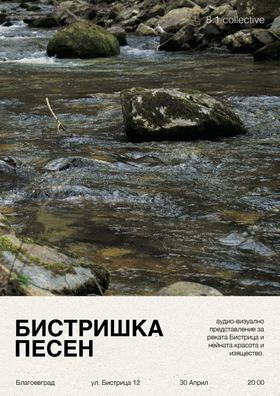
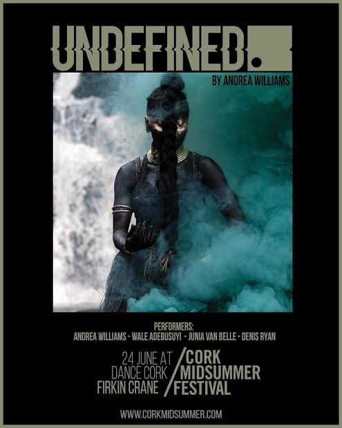
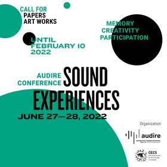
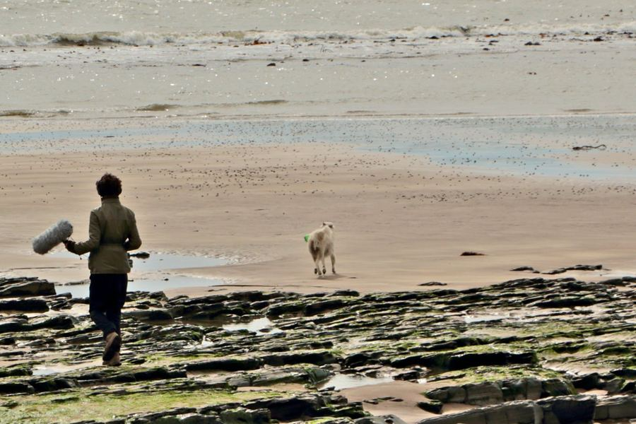
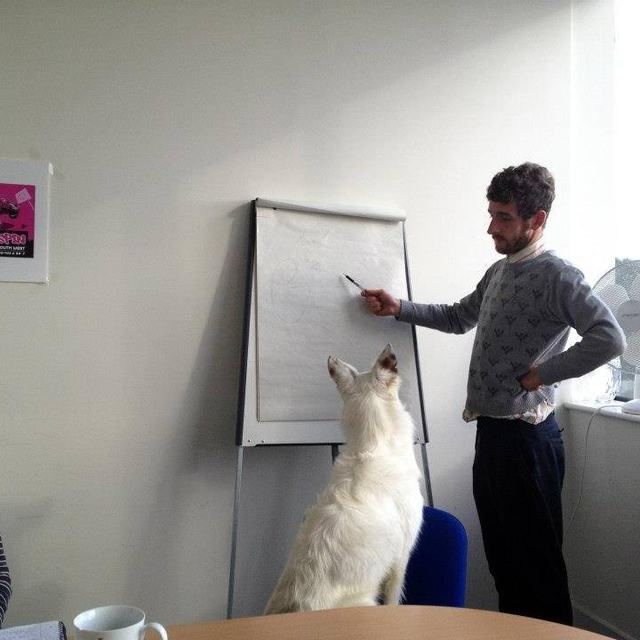
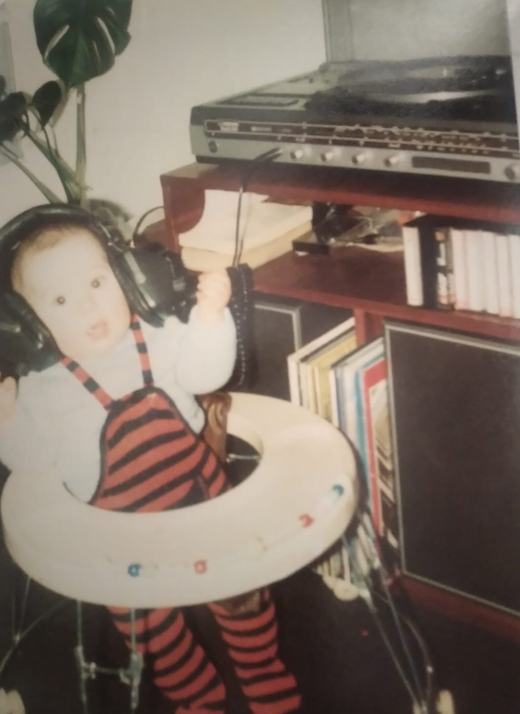
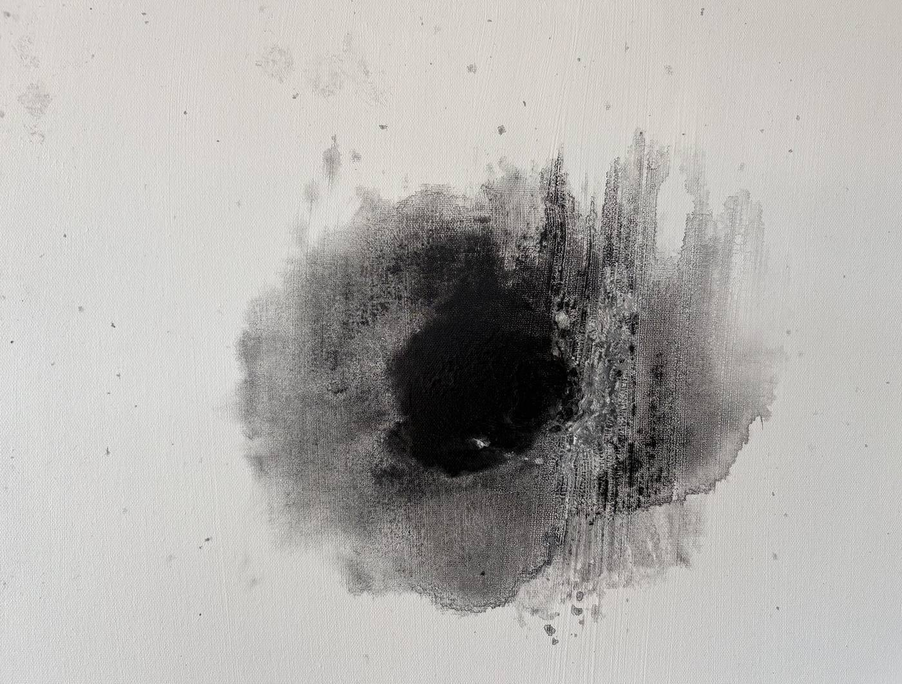

Audio documentary maker and sound artist. Associate Professor at the American University in Bulgaria. Prix Italia, 2017.
An immersive listening performance of live vinyl, field recordings and sound design.
A sound portrait of the river that runs past AUBG, recorded on foot from campus up to the Makedonia hut. Made with my Applied Audio class and premiered live for a full local audience.

Experimental audio poetry on Ovid's exile to Tomis, with poet Oana Marian and sound designer Vera Arzumanyan.
Listen on Éist Radio →A soundscape of Rwanda in late 2022, recorded mostly on the shore of Lake Kivu by the Congo border and in the east near Tanzania. It ends with the songs of the night fishermen, who sing for bravery, strength and a safe return as they head out onto dark water.
Listen on SoundCloud → Ambient Orbit →Sound design for Undefined, a new dance-theatre work by Andrea Williams, premiered at Dance Cork Firkin Crane.

My lament for the Irish fog horn was selected for Sound Experiences, an international conference on memory, creativity and participation in sound, organised by the Audire project and CECS, the Communication and Society Research Centre.

Daily reports from the Polish–Ukrainian border in the first weeks of the full-scale invasion.
Katie Cooke, a young Irish runner, lives with epilepsy and keeps racing long distance. Winner of the Prix Italia for Best Documentary.
Listen on RTÉ Doc on One →The life and death in Ireland of the young Iranian writer Marsha Mehran.
Listen on RTÉ Doc on One →Reporting from Malawi on the UN Development Goals and what they mean for young people.
Listen on SoundCloud →Radio training for Roma young people from Blagoevgrad's Mahala, run with student research assistants.
About the grant →A radio outreach programme for young women in West Clare, supported by the Irish youth service and recognised with a Civic Engagement Award from local government.

My research looks at voice and listening, asking who gets heard on air and how sound carries memory. It runs along three lines: community and youth radio, the history of broadcasting, and practice-led work in documentary and sound art. Most of my outputs are creative works, each commissioned by a broadcaster or festival or selected by a jury, and I am writing them up for peer review.
I chose teaching over a career in industry because that is where my heart is. At AUBG I built the department's audio track, co-chair the Department of Journalism, Media and Communication, and have supervised 20+ capstone and independent studies.


I'm from Cork. I came to radio through community stations and current affairs, and I still make work for the airwaves: documentaries, reports, field recordings and pieces for live audiences. My documentaries have won the Prix Italia, two golds at the New York Festivals and two Irish radio awards for best documentary.
Most of what I make is about people at the edges, whether that's young people in West Clare, Roma teenagers in Blagoevgrad, or migrant fishermen at Lake Kivu in Central Africa. Lately it has turned towards listening itself: field recordings, installations and live work. Since 2018 I've lived in Bulgaria, teaching at the American University.
